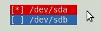

Bonjour à tous, suite à la lecture d'un commentaire sur mon mini-tuto nommé "Comment modifier l'ordre de boot de Grub", j'ai décidé de m'attaquer à un big-tuto pour vous faire comprendre à tous ce que Grub peut faire.
Derrière ce nom barbare se cache un programme très utile aux utilisateurs de Linux. En vérité Grub est ce qu'on appelle un chargeur d'amorçage, ou (pour les anglophones bootloader). L'acronyme signifie the GRand Unified Bootloader ou littéralement le Grand Chargeur Unifié.
Je sais, ça ne veux rien dire ^^ mais ne vous inquiétez pas, nous allons clarifier ça tout au long de ce tutoriel.
Note : le tuto était au départ destiné à la première version de Grub, mais une nouvelle version étant apparue entre temps, j'ai dû adapter le tuto pour les faire cohabiter.
Ce tutoriel va donc vous proposer de configurer aussi bien Grub que Grub2 (Grub-pc).
Ainsi, si vous voyez une mauvaise référence à l'ancienne version ou une manipulation qui n'est plus à jour (malgré le soin de mes petites mains et de celles de toute l'équipe), merci de me le signaler ! ;)
Le projet GNU a été créé par Richard Stallman en 1984 alors qu'il travaillait au MIT (au laboratoire d'intelligence artificielle). Il souhaitait selon ses dires créer un système d'exploitation libre et complet pour "ramener l'esprit de coopération qui prévalait dans la communauté informatique dans les jours anciens".
La mascotte de GNU est un gnou (en raison de sa prononciation anglophone).
Le terme GNU est un acronyme récursif pour Gnu's Not Unix (Gnu N'est pas Unix). Il faut savoir qu'au moment de la création du projet GNU, le système UNIX était déjà bien lancé et reconnu par les informaticiens. GNU fut donc créé dans le but d'être compatible avec ce système.
En 1985, Stallman fonde la Free Software Foundation, structure logistique, légale et financière du projet GNU. La FSF finance le développement du projet GNU et ce sont pour la plupart des communautés étudiantes américaines qui ont rendu ce projet viable. Le projet GNU se développe rapidement si bien que plusieurs sociétés contribuent au projet GNU en revendant ses logiciels, ou en offrant un support technique.
En 1990, GNU dispose de son propre éditeur de texte (Emacs), de son compilateur (GCC) et de la plupart des bibliothèques dont dispose Unix. Mais il manque encore un noyau.
Les systèmes 100% GNU sont des utopies mais il existe certains systèmes s'en approchant (comme Debian). La totalité des distributions de Linux sont plus ou moins apparentées au projet GNU au point que Richard Stallman défendait l'appellation distribution GNU/Linux.
A ce stade, il manquait encore une pièce du puzzle : le noyau, et c'est ici que Linux fait son apparition.
Grub est un programme de multiboot libre et gratuit.
Ce genre de programme se nomme bootloaderouchargeur d'amorçage. Il permet de choisir entre plusieurs systèmes d'exploitation (OS) sur une seul machine.
Grub a été créé en 1995 par Erich Boleyn à l'université de l'Utah. Avec l'aide de Brian FORD, il a créé un lanceur de multiboot. Erich a compris qu'il aurait plus vite fait d'écrire son propre chargeur plutôt que d'en modifier un autre.
Erich a ajouté de nombreuses fonctions à GRUB, mais d'autres priorités l'ont empêché de suivre les demandes du nombre croissant d'utilisateurs. En 1999, Gordon Matzigkeit et Yoshinori K. Okuji ont adopté GRUB comme un projet GNU officiel.
Sa principale fonction est de pouvoir supporter la spécification multiboot. Ses concepteurs voulait qu'il soit en même temps :
Simple d'utilisation ;
Fonctionnel pour les experts et les concepteurs de noyau ;
Qu'il soit compatible avec les systèmes du moment.
Grub possède une interface de commande. Elle s'affiche automatiquement si il manque un fichier de configuration ou si il y a une erreur.
Contrairement à LILO, GRUB n'a pas besoin d'être réinstallé pour mettre à jour sa configuration. Une simple commande permet sa mise à jour sudo update-grub
GRUB est par ailleurs très flexible : il permet de charger aussi bien des systèmes compatibles avec le multiboot que des systèmes non-compatibles avec cette fonction (comme Microsoft Windows). Il supporte en outre beaucoup de systèmes de fichiers comme ext3, VFAT ou NTFS. GRUB est également compatible avec le mode Logical Block Address (anglais et pas très utile ici ^^ ).
Derrière ce pavé se cache une notion fondamentale de l'informatique. Tout d'abord, en anglais, TO BOOT signifie INITIALISER. En informatique, la procédure de boot est le démarrage de l'ordinateur en "passant la main" à un système d'exploitation.
Que se passe-t-il entre le moment où vous appuyez sur le bouton de mise sous tension de votre ordinateur et le moment où vous voyez le logo de votre OS avec sa barre de chargement ?
Pendant le moment ou vous voyez les écrans publicitaires avec les marques et logos de votre PC, un programme se charge : le BIOS.
Le BIOS (ou Basic Input Output System) va lire le MBR (Master Boot Record), premier secteur d'un disque dur ou se trouve la table des partitions et un programme : le bootloader.
Ce superbe programme, stocké sur la ROM (mémoire morte) ou sur la mémoire vive, va extraire le noyau du système d'exploitation (kernel en anglais) qui fera le lien entre logiciel et matériel et donne sa dernière instruction : l'exécuter.
Et ce bootloader cela peut être Grub.
Voila pour le début, la partie la plus ennuyeuse est passée. :p
Vous allez ici apprendre à installer Grub2 sur votre machine. Depuis la version 2, c'est devenu très facile ! ;)
ATTENTION ! La partie qui suit comporte certains risques, minimes certes mais pas inexistants. Les opération décrites ici ont été effectuées par des millions de gens mais je ne saurais être tenu responsable des éventuels dommages rencontrés si vous vous écartez hors des sentiers battus.
Installer Grub2 n'est pas difficile, il vous suffit d'installer le paquet grub-pc, puis de lancer la configuration automatique :
$ sudo apt-get install grub-pc
$ sudo grub-install /dev/sdX // Remplacez le X par la lettre de votre disque-dur dans /dev/ (Exemple: /dev/sda)
$ sudo update-grub
Grub-install copiera tous les fichiers dont grub-pc a besoin dans le dossier /boot et la commande update-grub génèrera un nouveau fichier grub.cfg (voir plus loin).
La première version de Grub est peut-être déjà installée sur votre machine. Il est alors possible que Grub2 soit automatiquement mis à jour si la version de votre système est récente, mais pour les versions antérieures, vous serez probablement amenés à effectuer les manipulations suivantes :
Durant l'installation, vous devrez configurer le disque sur lequel se trouve la partition /boot.

Voila, GRUB est enfin installé. Si tout s'est bien passé, félicitations à vous. Si ce n'est pas le cas, reportez-vous à la partie "Réparation et Restauration" (en cours de rédaction :-° ) ou en attendant, aux forums ou bien envoyez moi un MP ;)
# Uncomment to disable graphical terminal (grub-pc only) #GRUB_TERMINAL=console
# The resolution used on graphical terminal # note that you can use only modes which your graphic card supports via VBE # you can see them in real GRUB with the command `vbeinfo' #GRUB_GFXMODE=640x480
# Uncomment if you don't want GRUB to pass "root=UUID=xxx" parameter to Linux #GRUB_DISABLE_LINUX_UUID=true
# Uncomment to disable generation of recovery mode menu entrys #GRUB_DISABLE_LINUX_RECOVERY="true"
Dans cette couleur bleue, ce sont les commentaires. Dans cette couleur rouge, ce sont les parties actives qui seront traitées.
A l'exception du README, les autres sont des script bash. La génération du fichier grub.cfg va se passer tout simplement en exécutant l'ensemble de ces scripts dans un ordre croissant, l'ordre étant appliqué sur les numéros XX précédent le caractère _ dans le nom de ces scripts.
00_header : script permettant la génération de l'en-tête du fichier grub.cfg. Cet en-tête est généré principalement à l'aide des informations que vous avez paramétrées dans le fichier /etc/default/grub.
05_debian_theme : script permettant la génération des informations sur le thème graphique du menu de démarrage. À l'heure où j'écris ces lignes, sur Ubuntu 9.10, le thème est minimal : du texte blanc sur un fond noir.
10_linux : script permettant de générer les entrées correspondant à votre système GNU/Linux hôte.
20_memtest86+ : script permettant de générer les entrées memtest.
30_os-prober : script permettant de détecter des nouveaux systèmes lors de la génération du fichier grub.cfg et de générer les entrées correspondantes. Il est normalement capable de détecter les systèmes avec un noyaux Linux, un noyau Hurd, les systèmes Windows et les systèmes Mac OS X.
40_custom : script permettant de générer des entrées introduites manuellement dans ce fichier.
Le fichier /boot/grub/grub.cfg
Alors là, pas touche ! Si vous êtes sur Debian (Ubuntu par exemple), ce fichier est généré automatiquement par Grub après chaque mise à jour de votre part (n'oubliez pas de le faire après les modifications) : sudo update-grub
Sinon, vous pouvez le modifier ; le principe reste le même que plus haut (la syntaxe est un peu différente):
(hdn,m) est la partition m du disque n, le numéro du disque commence par zéro (0), les partitions par un (1).
set default=n est l'entrée par défaut, qui démarrera automatiquement après le time-out.
set timeout=m le temps m m est le temps d'attente avant que le choix par défaut ne démarre.
menuentry "str"{options} title string 'str' pour préciser manuellement une entrée du menu et la façon donc elle sera affichée.
set root=(hdn,m) définit la partition root (/), là où est installé le noyau.
linux /path ro root=/dev/device initrd /initrd.img options pour la partition root, si le noyau n'est pas installé sur la partition / .
chainloader +1 permet de passer le relai à un autre bootloader (exemple celui de Windows, nécessaire à son démarrage)
Ici, ça ce complique un peu (non, ne partez pas, j'ai dit un peu ! :p )
La ligne de base
Nous allons éditer la ou les lignes commençant par GRUB_DISTRIBUTOR (je n'en ai qu'une, mais je n'exclus pas la possibilité de systèmes un peu plus exotiques ^^ )
Ces lignes vont définir ce qui sera affiché à l'écran suivant les options choisies.
Choisissez parmi les options suivantes :
Citation : Doc
GRUB_DISTRIBUTOR=`lsb_release -i -s 2> /dev/null || echo Debian` # donne : Ubuntu, Linux 2.6... #GRUB_DISTRIBUTOR=`lsb_release -d -s 2> /dev/null || echo Debian` # donne : Ubuntu 9.10, Linux 2.6... #GRUB_DISTRIBUTOR=`echo -n $(lsb_release -cds 2> /dev/null || echo Debian)` # donne : Ubuntu 9.10 karmic, Linux 2.6....
Les autres
Il est aussi possible d'ajouter des entrées "manuellement". Pour cela, éditez le fichier /ect/grub.d/40_custom et ajoutez vos entrées. En effet, tout ce qui est présent dans ce fichier sera recopié tel quel dans le fichier grub.cfg.
Exemple:
Citation : 40_custom
### BEGIN /etc/grub.d/40_custom ### # This file provides an easy way to add custom menu entries. Simply type the # menu entries you want to add after this comment. Be careful not to change # the 'exec tail' line above.
menuentry "Windows 7" { set root=(hd0,1) chainloader +1 }
Le recovery mode est un mode de Linux vous permettant de réparer votre OS en cas de problème et vous offre notamment un shell normal ainsi que plusieurs autres options intéressantes.
Pour le protéger, il vous suffit de dé-commenter cette ligne du fichier /ect/default/grub :
Citation : menu.lst
#GRUB_DISABLE_LINUX_RECOVERY="true" // Enlevez le #
On n'oublie pas de mettre à jour :
$ sudo update-grub
Ainsi Grub ne génèrera plus d'entrée recovery dans son menu. Notez cependant que le jour où vous avez un problème, vous risquez fort de devoir booter sur un Live CD pour la re-commenter.
Protéger entièrement le menu
Vous pouvez également protéger avec un mot de passe tout le menu. Ce How To m'a été proposé dans les commentaires. Je ne traiterai pas cette partie plus en détail car :
je n'aime pas vraiment le concept (devoir sans arrêt taper son mot de passe à chaque démarrage...) ;
ces explications, bien qu'en anglais, sont très bien rédigées.
Surement la plus intéressante : elle vous permet de modifier l'entrée de votre menu sur laquelle vous allez booter automatiquement. La valeur peut être un nombre naturel (définissant la position) ou saved. Ce dernier indique que l'entrée choisie au dernier démarrage sera la prochaine entrée par défaut. Lorsque cette ligne est commentée, la valeur par défaut est 0.
Citation
GRUB_TIMEOUT="5"
Cette ligne précise le nombre de secondes à attendre avant de booter sur le default. La valeur est soit un nombre naturel (secondes), soit -1. Ce dernier indiquera que le menu doit attendre indéfiniment. Précisons que si la valeur est 0, l'entrée par défaut sera bootée instantanément. Lorsque cette ligne est commentée, la valeur par défaut est 5.
Citation
#GRUB_HIDDEN_TIMEOUT=0
Permet de définir si le menu de démarrage doit être affiché ou non. Si ce paramètre est commenté, il sera affiché, sinon, sa valeur est un nombre naturel (secondes). Lequel définit le nombre de secondes à attendre avant de lancer le boot de l'entrée par défaut. Si cette valeur est supérieure à 0, pendant le nombre de secondes définies, vous aurez la possibilité de faire afficher le menu manuellement en appuyant sur Esc par exemple. Notez bien la différence avec le précédent : ici, vous ne verrez pas le menu.
Citation
#GRUB_HIDDEN_TIMEOUT_QUIET=true
Permet de définir si un chronomètre doit être affiché durant les GRUB_HIDDEN_TIMEOUT secondes définies dans le paramètre précédent. Sa valeur est true ou false. Lorsque cette ligne est commentée, la valeur par défaut est false.
Notez cependant que ce n'est pas quelque chose d'essentiel, et que la plupart d'entre vous choisiront sûrement de ne pas afficher leur menu du tout.
Pas vraiment de conclusion, les choses vues dans ce chapitres sont assez diverses et variées.
Encore une fois, si vous avez rencontré un problème, vous pourrez vous reporter au chapitre sur les erreurs fréquentes (en cours de rédaction) ou bien poster un message sur les forums (pensez à faire une recherche avant, les forums grouillent de sujets sur les erreurs de Grub) ou encore m'envoyez un MP, je me ferai un plaisir de vous aider ! ;)
Dans ce chapitre, vous allez apprendre à configurer Grub (ou encore "Grub legacy", l'ancienne version) pour le rendre plus convivial et à terme plus sécurisé !
Prenez votre menu et définissez le numéro auquel va correspondre le système qui vous intéresse de cette façon :
Ubuntu, kernel 2.6.17-10-generic
Ubuntu, kernel 2.6.17-10-generic (recovery mod)
Ubuntu, memtest86+
Other operating systems:
Windows XP Media Center Edition
Windows NT/2000/XP
Microsoft Windows XP Embedded
Une fois revenu sur votre bureau, ouvrez un terminal et entrez-y :
pour KDE :
kdesu kate /boot/grub/menu.lst
pour Gnome :
gksudo gedit /boot/grub/menu.lst
pour XFCE :
sudo mousepad /boot/grub/menu.lst
Si vous n'avez pas compris, on va ouvrir le fichier cible de l'adresse /boot/grub/menu.lst.
Effectivement, ce n'est pas très digeste... :'( Le mien est résumé ainsi :
default 0
timeout 15
hiddenmenu
title Ubuntu, kernel 2.6.17-10-generic
root (hd0,4)
kernel /boot/vmlinuz-2.6.17-10-generic root=/dev/sda5 ro quiet splash
initrd /boot/initrd.img-2.6.17-10-generic
quiet
savedefault
boot
title Ubuntu, kernel 2.6.17-10-generic (recovery mode)
root (hd0,4)
kernel /boot/vmlinuz-2.6.17-10-generic root=/dev/sda5 ro single
initrd /boot/initrd.img-2.6.17-10-generic
boot
title Ubuntu, memtest86+
root (hd0,4)
kernel /boot/memtest86+.bin
quiet
boot
title Other operating systems:
root
title Windows XP Media Center Edition
root (hd0,0)
savedefault
makeactive
chainloader +1
Remplacez tout simplement le chiffre suivant default par celui qui vous intéresse.
default X
Où X est le chiffre que vous avez choisi en première partie.
Enregistrez votre fichier, fermez et redémarrez. Magique :magicien: , le curseur est déjà placé sur le choix que vous vouliez. Laissez passer le temps et Grub bootera sur votre choix par défaut. C'est tout.
Il existe une autre méthode afin de déterminer le système par défaut.
Grub vous propose de déterminer lui-même le système sur lequel vous allez booter, en ne choisissant pas n'importe lequel, mais le dernier état sauvegardé.
Question logique : comment sauvegarde-t-on ?
Regardez vos entrées, avec un peu de chance, vous devriez y voir au moins un savedefault. Cela signifie que vous allez automatiquement enregistrer ce choix comme choix par défaut pour le boot.
Placez donc savedefault après votre choix le plus important et prenez soin de le retirer aux autres. Ensuite, remontez en haut du fichier et éditez encore une fois la ligne default X et changez le X par saved.
Grub sélectionnera automatiquement le système qu'il aura sauvegardé au préalable ;)
Pour changer le nom et avoir un menu de boot plus simple.
La protection des entrées
Et oui ! C'est possible ! Grub vous permet de protéger votre système avec un mot de passe supplémentaire.
Et alors ? J'ai déjà un Mdp pour me connecter sur ma machine, moi !
C'est vrai. Néanmoins, ce que vous ne savez peut être pas, c'est qu'en mode recovery, vous avez accès à beaucoup d'éléments et notamment une console en root sans mot de passe ! C'est plutôt risqué !
Pour protéger Grub par un mot de passe, il vous faut déjà ... un mot de passe. Grub vous propose par ailleurs de le crypter lui-même en md5 :
grub> md5crypt
md5crypt
Password: votre mot de passe
Encrypted: $1$gLhU0/$aW78kHK1QfV3P2b2znUoe/
grub> quit
Décommentez ensuite la ligne correspondant dans le menu.lst (en n'oubliant pas de changer le mot de passe encrypté par le vôtre !!!)
Citation
## password ['--md5'] passwd # If used in the first section of a menu file, disable all interactive editing # control (menu entry editor and command-line) and entries protected by the # command 'lock' # e.g. password topsecret password --md5 $1$gLhU0/$aW78kHK1QfV3P2b2znUoe/ # password topsecret
Maintenant vous avez deux possibilités :
Protéger une seule entrée
C'est assez facile, ajoutez simplement lock à la suite de vos options sur le système voulu :
Citation
title Ubuntu 9.04, kernel 2.6.28-14-generic (recovery mode) lock uuid e77d8ae8-36d8-42d1-891d-2cf89dbf0b0c kernel /boot/vmlinuz-2.6.28-14-generic root=UUID=e77d8ae8-36d8-42d1-891d-2cf89dbf0b0c ro single initrd /boot/initrd.img-2.6.28-14-generic
Pour être sûr de ne pas vous planter, testez sur un ancien noyau ou un vieux truc histoire de ne pas rester coincé au menu.
Protéger tous les recovery mode
Encore une fois, cela va être assez rapide. Remplacez :
Citation
# lockalternative=false
Par :
Citation
# lockalternative=true
Ainsi, tous vos recovery modes seront protégés et cela même après mise à jour du noyau ;)
Il est vrai que la première version est plus facile à configurer que la dernière, tout tient en un seul fichier (un peu "mastoc" certes :p ).
Voici les sources qui m'ont servi à la création de ce site. La plupart traitent de Grub-legacy mais m'ont été bien utiles dans la rédaction. Les autres m'ont servi à l'adaptation pour Grub2.
Un grand merci à toute l'équipe, ainsi qu'à tous ceux qui m'enverront des commentaires constructifs afin d'améliorer la qualité de ce tutoriel, et de le rendre plus facile à appréhender.
Un merci spécial à Coyote, pour la correction et la validation du tutoriel.
Voila pour ce tutoriel, j'espère que vous en savez maintenant un peu plus sur votre bootloader préféré et que vous avez réussi à l'installer et/ou le configurer sans problème.
Notez que le tutoriel est encore en cours de rédaction et la partie traitant des erreurs et de leur réparation devrait voir le jour d'ici peu (suivant mes disponibilités).
Merci de votre lecture et encore une fois, en cas de problèmes ou de questions, je reste à votre disposition ;)